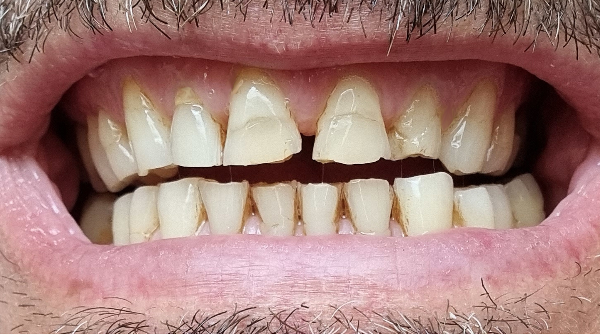
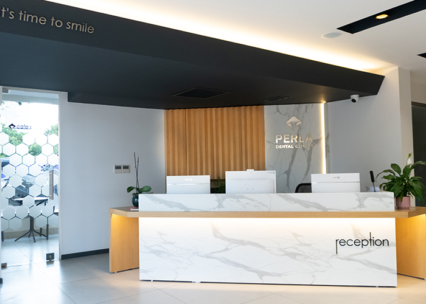
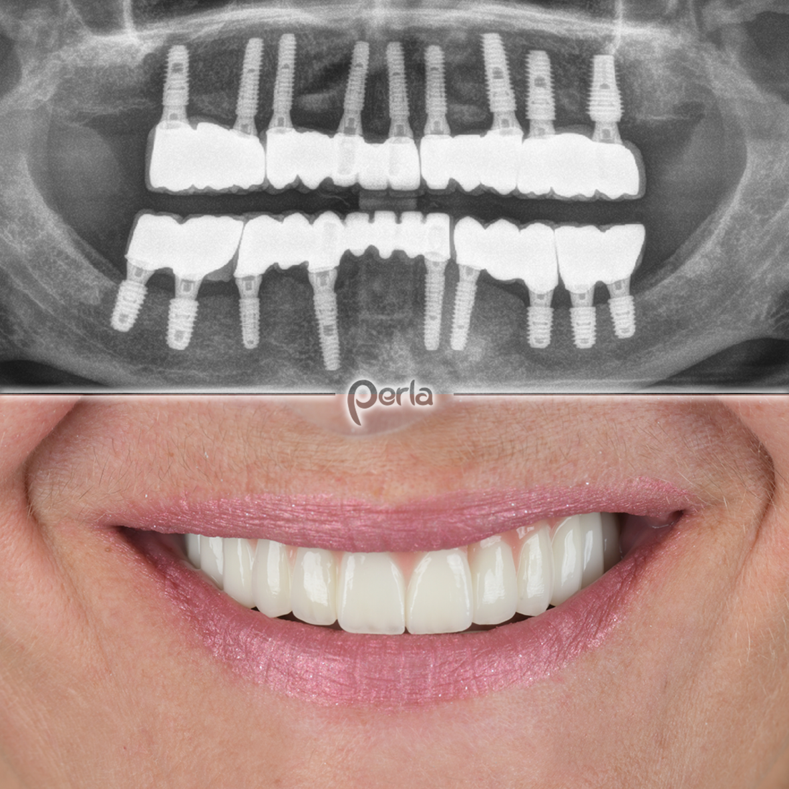
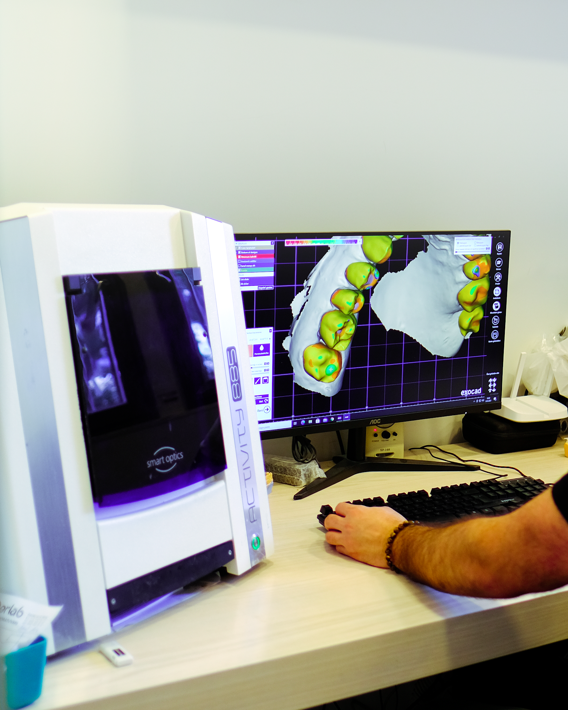

Perla Dental Clinics olarak, modern ekipmanlarımız ve deneyimli hekim kadromuzla ağız ve diş sağlığınızı korumak için buradayız. Hastalarımıza huzurlu bir ortamda, şeffaf ve güvenilir bir tedavi süreci sunuyoruz.
Selfie yükleyin, dişlerinizi çerçeveleyin, kaydırın. Fotoğrafınız telefonunuzdan çıkmaz.
Önce fotoğrafınızı yükleyin.
Simülasyon fikir vermek içindir; gerçek sonuç muayene ve dijital gülüş tasarımı (DSD) ile planlanır.
Tedavilerinizi seçin: tahmini fiyat aralığı, Antalya'da kalmanız gereken gün ve gün gün planınız anında çıksın.
Ağız ve diş sağlığınızı korumak için periyodik kontrollerinizi gerçekleştiriyoruz.
Minik hastalarımızın diş sağlığı süreçlerini ilgiyle takip ediyoruz.
Diş eti sağlığınızı korumaya yönelik profesyonel çözümler sunuyoruz.
Diş kaybını önlemek amacıyla uygulanan kök kanal tedavi hizmetleri.
Gülüşünüzün tonunu korumak ve canlandırmak için klinik uygulamalar.
Eksik dişlerin fonksiyonelliğini geri kazandırmak için protez seçenekleri.




Tedavi planınızı röntgen ve muayene sonuçlarıyla size açıkça anlatıyoruz.
Hekimlerimiz, uygulanan işlemlerin her aşamasında sizi detaylıca bilgilendirir.
Resepsiyondan tedavi sonuna kadar tüm ekibimizle yanınızdayız.
Her yaştan hastamıza, ihtiyaç duyduğu hassasiyetle tedavi hizmeti sunuyoruz.
📍 Fener, 1964. Sk. No:7, 07160 Muratpaşa/Antalya
🕑 Pzt 09:30–18:00 · Sal–Cum 09:00–21:00 · Cmt 09:00–18:00 · Paz kapalı
360° GÖRÜNÜM
Görüntüyü fareyle ya da parmağınızla çevirin; bulunduğumuz sokağı ve girişimizi 360° gezin, gelirken zorlanmayın.
Görüntü: Google Street View · Yol tarifi al